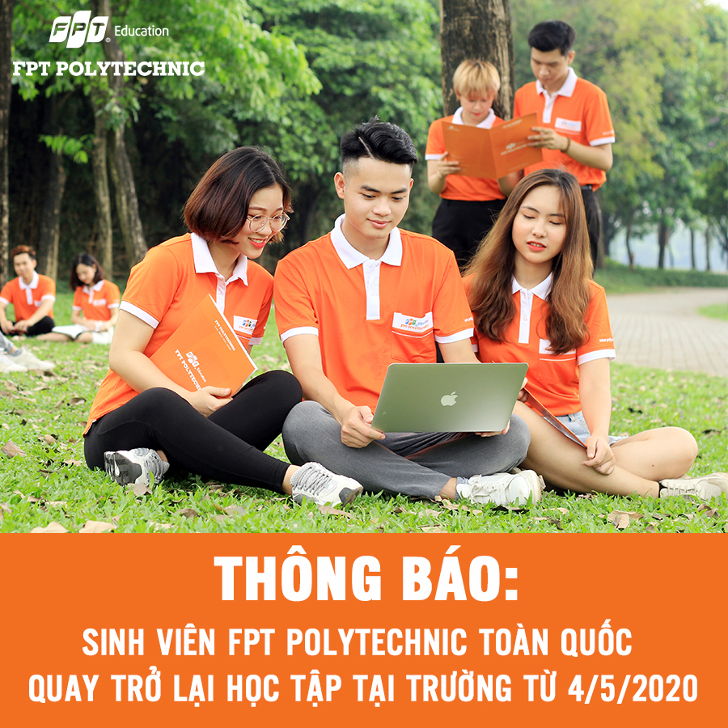

Sinh viên

Sổ tay sinh viên

Thông tư số 55/2012/TT-BGDĐT ngày 25/12/2012 của Bộ trưởng Bộ GD & ĐT quy định đào tạo
liên thông trình độ cao đẳng,đại học, có hiệu lực từ ngày 07/02/2013
Văn bản hợp nhất số 02/VBHN-BGDĐT quy định đào tạo liên thông trình độ cao đẳng, đại học